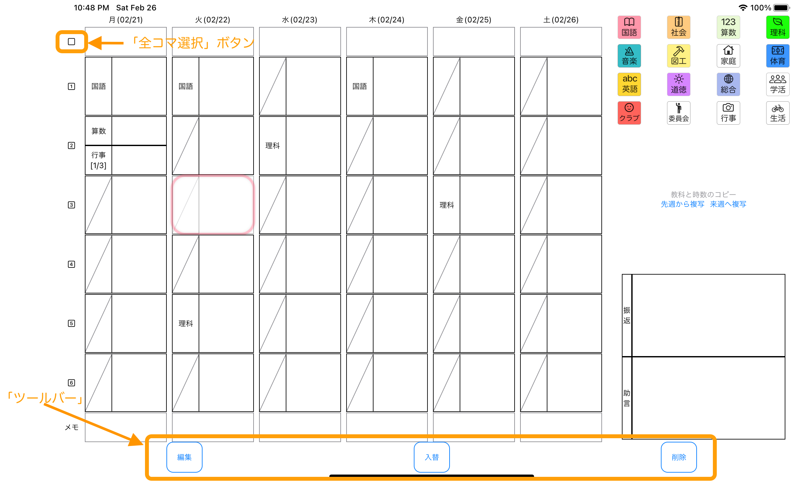
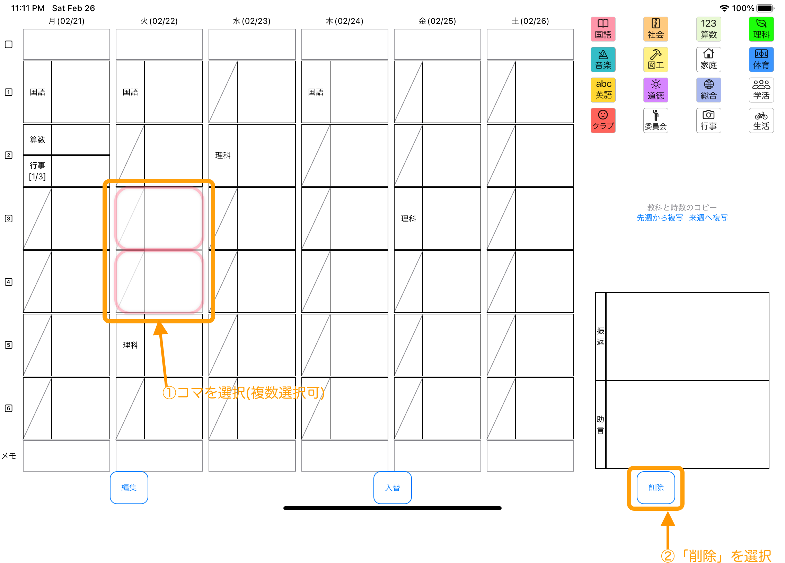
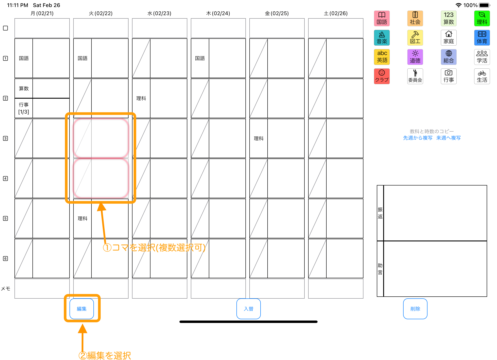
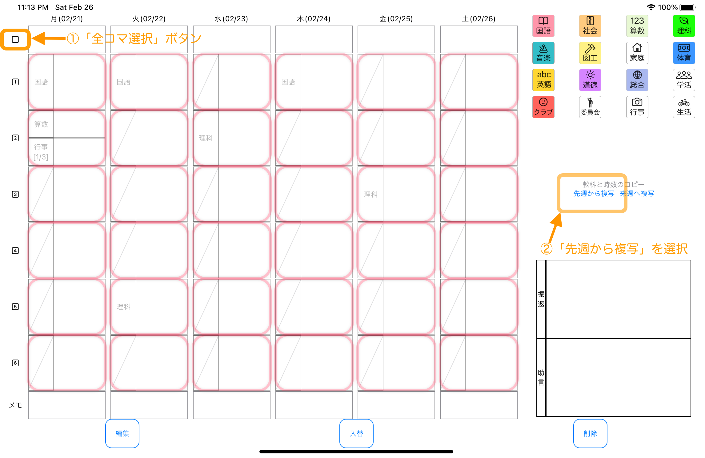

Class Schedule For Teacher 「せんせいの時間割」について
Class Schedule For Teacher 「せんせいの時間割」について
Class Schedule For Teacher 「せんせいの時間割」について
Class Schedule For Teacher 「せんせいの時間割」についてこのアプリケーションは、 毎日の時間割を入力することで、各教科の時間数を週次、月次、年次で自動集計します。 小学校の先生の利用を想定しています。 先生の本来業務を邪魔されたくない、 先生の事務作業をもっと簡単・軽量にしたい、 そういった先生方の現場の声に応えることのできるアプリになりたい、 そのような願いを込めて、作成中の支援ツールです。 【主な機能】 ・曜日毎のメモ入力機能 ・時間割入力機能（各コマのメモ入力、教科一括入力・削除） ・年次、月次、週次の集計機能 ・印刷機能 【制限】 1.iPad横向き画面でのご利用となります。 2.日曜日は、入力できません。 3.各日最大６コマまで入力できます。 4.次に示す教科が初期設定されています。 国語、算数、理科、生活、社会、音楽、生活、学活、行事、総合、体育、図工、家庭、委員会、英語、道徳、クラブ 5.AirPrintに対応したプリンタへの印刷が可能です。
1.Home画面にある「週案」をタップして、週案画面を表示します。
2.メニューバーにある「更新」をタップして、今週の週案を更新します。
3.入力したいコマをタップし、下の方に表示されるツールバーを利用して、作成していきます。（複数選択可能）
3-1.教科を一括で入力する。入力したいコマ（複数選択可）をタップし、ツールバーの教科アイコンをタップします。
3-2.教科を一括で削除する。入力したいコマ（複数選択可）をタップし、ツールバーの「削除」をタップします。
3-3.コマを編集する。編集したいコマ（複数選択可）をタップし、ツールバーの「編集」をタップします。
3-4.コマを入替える。入替えたいコマを２個タップし、ツールバーの「入替」をタップします。
4.メニューバーにある「更新」をタップして、今週の週案を更新します。
5.メニューバーにある「印刷」をタップして、プリンタを選択し、週案を印刷します。
6.メニューバーにあるHomeをタップして、ホーム画面を表示します。次に、「年次集計」をタップして、年次集計画面を表示します。
ホーム画面
週案画面
年次集計画面
設定画面
メニューバー

ツールバー
教科一括入力

教科一括削除
一括編集
先週から複写
